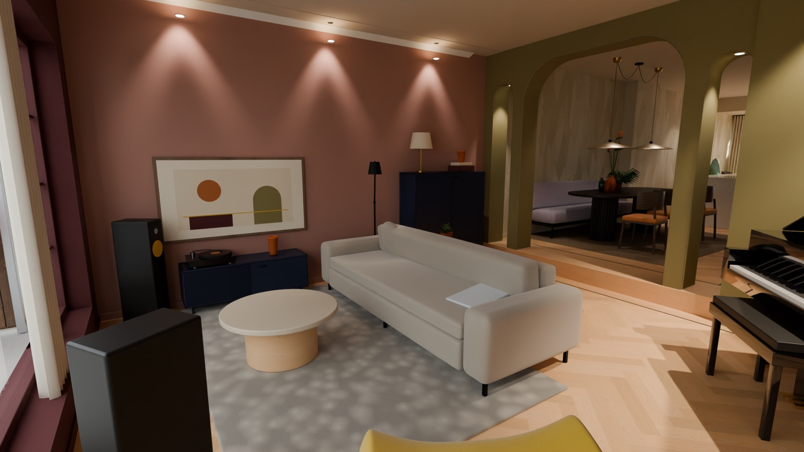
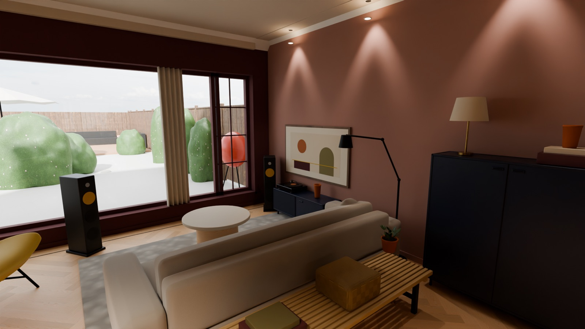
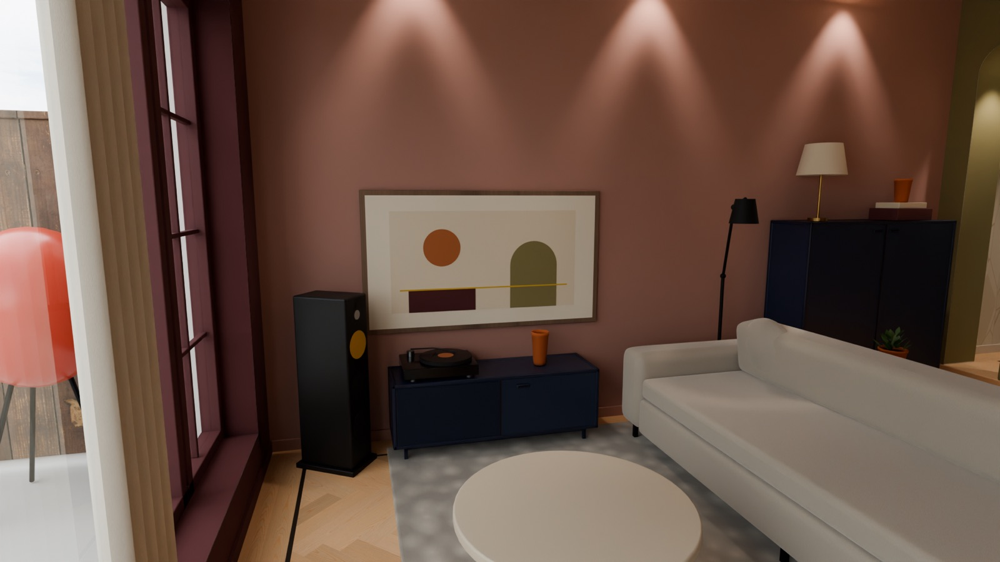

Woonkamer: knus en muzikaal
Merlot Mania omarmt de kamer, op de wanden én op kozijnen, plinten en deuren. Daardoor voelt de kamer als één geheel: diep en warm, met de tuin als lichte uitsparing.
De woningscheidende wand achter de bank, waar The Frame hangt, is Terra Pink: een warm, vergrijsd oudroze met een aardse ondertoon dat de Merlot zachter maakt. De Eyye Dura staat dwars in de kamer met zicht op de tuin, met de Nelson Bench erachter. The Frame hangt als kunstwerk boven een donkerblauwe Artifort Extens Low, de partner van de hoge Extens bij de boog; de B&W-speakers staan in de hoeken van de pui.